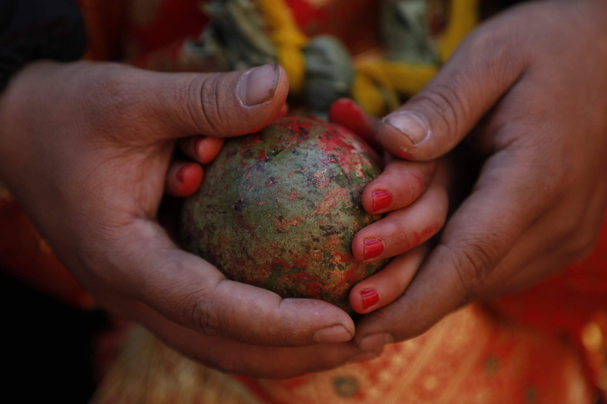
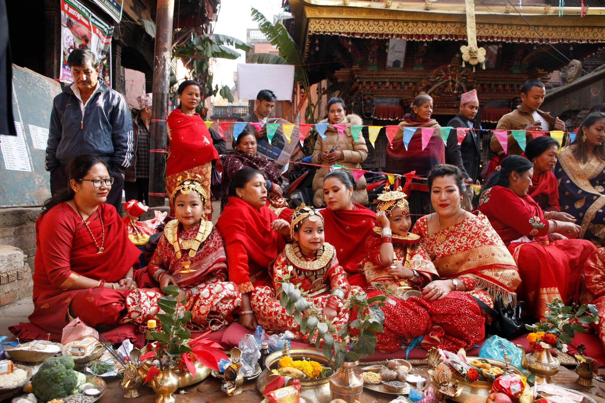

BEL BIBAHA

Bel Bibaha or Ehee is a ceremony in Newari community of Nepal in which pre-adolescent girls are married to the Bel (fruit of wood apple tree) fruit. The fruit is bridegroom that symbolizes the eternal bachelor Lord Kumar, the son of Lord Shiva, and the marriage ensures that the girl becomes and remains fertile.The Bel fruit must look rich and ripe and must not be damaged in any kind. It is believed if the fruit is damaged in any way, the bride will be destined with an ugly and unfaithful husband after her real marriage. However, the most important reason for marrying the girl with the Bel fruit is that once she is married to Lord Kumar, she will remain pure and chaste and she would not be considered a widow even after the death of her ‘real’ husband as she is already married to the Lord who is still believed to be alive.Normally, Newar girls are married thrice in their lives. The first is called Ehee (in Newari) and Bel Bibaha (in Nepali) when they marry the Bel fruit. The second is the marriage with Sun which is called Tayegu (in Newari) or Gufa Rakhne (in Nepali). Finally the third, when they marry a real bridegroom. These marriage ceremonies are practiced by both Buddhist Newars and Hindu Newars.The tradition of Bel Bibaha is believed to be started after a raid by Shamsuddhin Ilyas- a warlord from Bengal, during the 14th century. The invading force sacked the land, burnt palaces, looted temples, killed men and boys, dishonored girls but left married women alone. This led people to believe that marrying pre-puberty girls would save them from dishonor in any future raid.Bel Bibaha of a girl is held at her odd age like 5, 7, 9, before they reach puberty. It is a two-day ceremony beginning with the purification rituals and ending with Kanyadan of the girl by her father. Kanyadan refers to ‘giving away the virgin’. It is performed in Non-Newar Hindu marriage. So, Ehee or Bel Bibaha is the first marriage of the girl except that she is married to the immortal God Kumar. It is a sacred ritual for the Newari girls and is conducted by Priest called Gubhaju for Buddhists Newars and Deobhaju for the Hindu Newars. It is usually done in group where the marriage ceremony of more than 1 or sometimes even hundred girls are performed at once.
The first day of Ehee is called Dusala Kriya when the girls prepare themselves at home with purification bath, new clothes and ornaments. Then they assemble at the purified courtyard with a senior woman of the father lineage. They seat in a neat line around the edge of the courtyard and go through series of rituals for a couple of hours.On the second day, the major event takes place when the girls assembled at the courtyard are dressed in glittering bridal suit comprising of ankle length skirt, blouse and shawl, more ornaments and red tika on their foreheads to give bridal look. The day begins with purification rituals and proceeds to Kanyadan when the father gives his daughter to Lord Kumar. It ends with giving a set of married woman’s clothes to the girl by her parents.

It is performed to save the girl from various dangers like the attack of spirits. But most important reason is to protect her from widowhood. The girl is in an eternal marriage with a god, so, the death of her mortal human spouse cannot deprive her of her married status and make her a widow. It also protected them from the custom of being burned alive on their husband’s funeral pyre, a common practice among the Hindu communities a century ago. It also enforces the widow remarriage in Newar community making the women free from the Hindu traditional viewpoint of one life one marriage system.
The tradition of Bel Bibaha is still performed in the Newari community with slight changes in the original customs and rites.